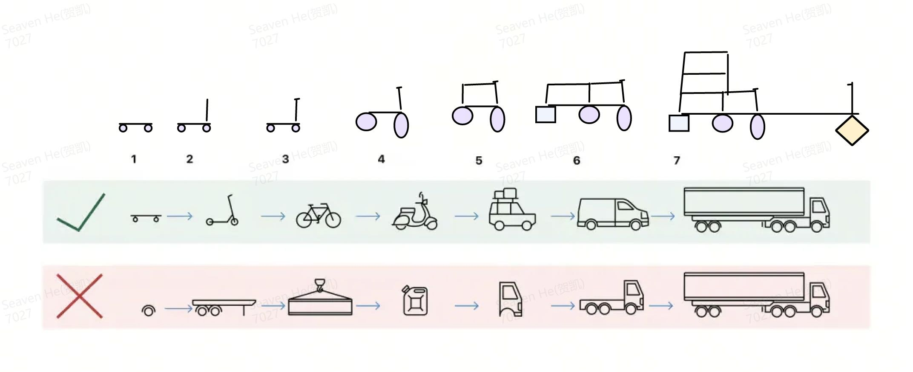
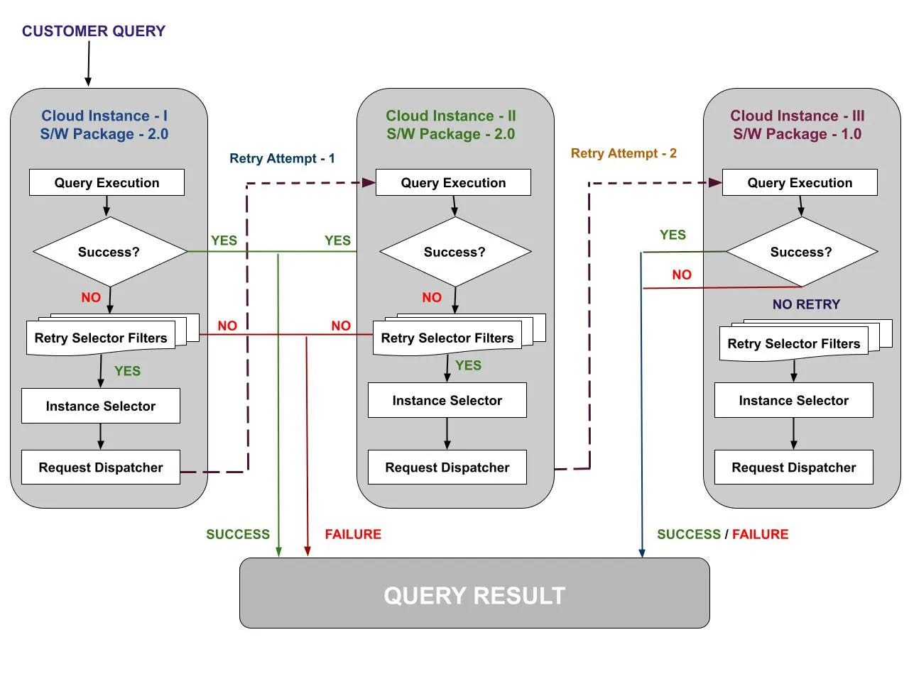
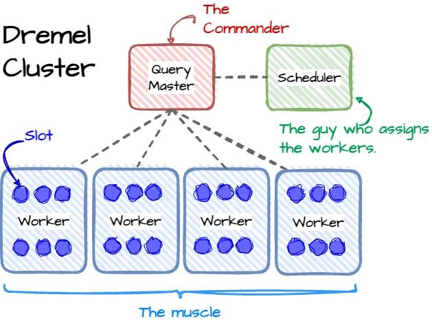
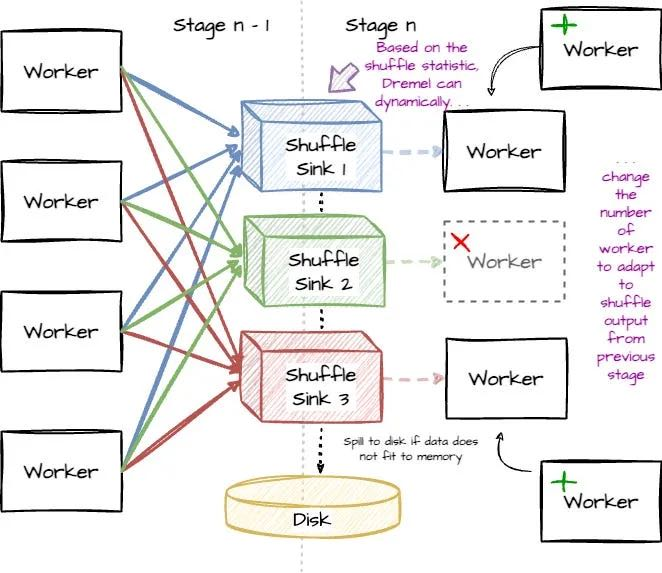
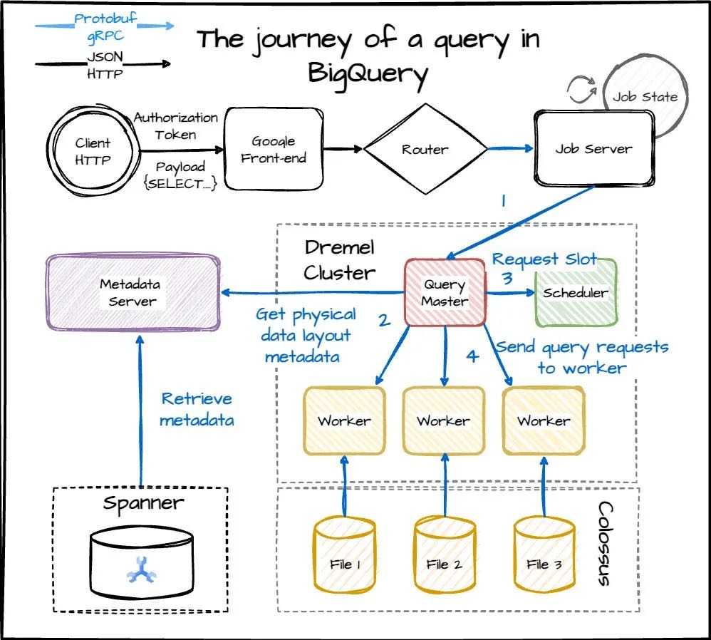

网络文章@202404

站在专业服务人员的角度，他们提供了如下几个视角：
- 中国绝大部分企业客户本来就没有什么购买力；极少数有购买力的企业，又往往不是依靠专业技术能力取胜的，所以对于通过信息技术提升生产力不太热衷。
- 因为企业自身的人力十分廉价、十分吃苦耐劳，所以它们对乙方也有类似的要求（甚至变本加厉）。企业客户对客服响应速度的要求，甚至比消费者还要高出几个重量级。
- 在乙方这边，由于太追求市场份额、太想通过价格战驱逐对手，所以极端没有原则。对于客户提出的降价甚至白嫖的无理要求，乙方往往照单全收甚至主动提供更好的条件，活生生把To B业务做成了Low B业务。
Qualifying Filesystems for Seastar and ScyllaDB - ScyllaDB
ScyllaDB 使用测试工具来发现FS是否支持AIO. 进行读写测试，然后检测期间的switch context.
Open Source Project Development Practice | by Jinpeng Zhang | Apr, 2024 | Medium
tikv同学写的管理好开源项目的实践
数据库有大量数据 • 按钮 — Databases Have a Lot of Data • Buttondown
正向的期望并不一定就代表是好的选择。在数据库优化上，我们不知道这种正向优化和它带来的负面问题，覆盖范围到底是多少。编译优化器和查询优化器本质上是一样的东西，但是如果都是改进10%两者产生的impact可能是完全不同的。
自适应Agg placement的实现，原理可能比较简单，最后面上生产过程比较值得学习。
One of our first priorities is to “do no harm” to customer workloads. The performance degradation in the initial testing was because the overhead of the query rewrite was greater than expected and our runtime cost model was not able to identify these cases. We made improvements to address the issues and kicked off another run of the benchmark. The end result is that we don’t always get as much improvement as we could, but in exchange for that, we do no harm.
如果发现某些case有回退情况的话，但是有些case可以改进很多的话，那么依然会舍弃这种改进。
Aggregation placement gets applied for every 1 in 5 production queries. The rollout plan for aggregation placement was designed to limit the impact and blast radius of any potential problems in our production systems. Over the course of 3 months, we gradually enabled the feature every week for a new portion of our customer accounts. We built a dashboard to monitor the feature rollout, making sure it does not break important health metrics of the system. Finally, aggregation placement is enabled in all production accounts after a nearly half-year effort of thorough testing and delivery.
即使在production test上面测试发现比较好的情况，依然需要做rollout。这个和on-prem数据库差异很大，因为一旦ship出去就没有办法evaluate了。
我个人认为， 这个意大利面就应该拌四十二号混凝土，因为这个螺丝钉的长度，很容易会直接影响到挖掘机的扭矩， 你知道吧， 你往里砸的时候， 一瞬间， 他就会产生大量的高能蛋白，俗称UFO，会严重影响经济的发展， 甚至对整个太平洋以及充电器， 都会造成一定的核污染，你知道吧，啊，再者说根据勾股定理， 你可以很容易的推断出， 人工饲养的东条鹰鸡， 它是可以捕获野生的三角函数的，所以说这个这个这个， 你不管秦始皇的切面是否具有放射性，特朗普的n次方，是否含有沉淀物，都不应影响这个这个沃尔玛跟维尔康在南极汇合。
SF Query内部重试机制：
- operator metadata要支持持久化
- operator 可以判断自己是否可以重试
- 重试流程如下：首先是更换节点，然后是更换到某个低版本

架构上有个scheduler在做task调度，每个stage以shuffle层作为临时存储节点，可以是内存也可以spill到磁盘上

有了scheduler之后，以及类似这种stage-by-stage方案，中间还可以进行自适应增加和减少节点来应对data skew.

在进行元信息分析的时候也可以用dremel来加速，big metadata
- After having the information, the Query Master looks up the table’s metadata from the metadata server (Google using Cloud Spanner for metadata storage); if the partition pruning is applied, the metadata server will only return the file locations for the partitions that match the filter. (Query Master uses other Dremel jobs for the look-up process.)
获得信息后，Query Master 从元数据服务器查找表的元数据（Google 使用 Cloud Spanner 进行元数据存储）；如果应用分区修剪，元数据服务器将仅返回与过滤器匹配的分区的文件位置。 （Query Master 使用其他 Dremel 作业进行查找过程。）

恐惧会让你成为更糟糕的程序员 — Fear makes you a worse programmer
Before I start, Ryan Kennedy linked me to this slide deck of a presentation he gave called Fear Driven Development which I absolutely loved, and I think you should look at it. I think my favorite sentence from that presentation is “Fear creates local maximums.”
在我开始之前，瑞安·肯尼迪（Ryan Kennedy）将我链接到了他的幻灯片，名为“恐惧驱动的发展”，我非常喜欢它，我认为你应该看看它。我认为该演讲中我最喜欢的一句话是“恐惧创造局部最大值”。
I find that when I’m afraid, I become super conservative. WE CANNOT POSSIBLY MAKE THIS CHANGE WHAT IF IT BREAKS?! And this means worse software! It’s actually kind of disastrous. If you’re scared of making changes, you can’t make something dramatically better, or do that big code cleanup. Maybe you can’t even deploy the code that you already wrote and tested, because it feels too scary. You just want to stick what’s sort-of-working, even if it’s not great.
我发现当我害怕时，我会变得超级保守。我们不可能做出这样的改变，如果它坏了怎么办？！这意味着更糟糕的软件！这实际上是灾难性的。如果你害怕做出改变，你就无法让事情变得更好，或者进行大规模的代码清理。也许你甚至无法部署已经编写和测试过的代码，因为感觉太可怕了。你只是想坚持做有效的事情，即使它不是很好。
Better tools & process => less fear 更好的工具和流程 => 更少的恐惧
But testing and version control are not the only tools we have! We can also build
但测试和版本控制并不是我们唯一的工具！我们还可以建造
- QA environments where breaking things is totally allowed and encouraged 完全允许和鼓励破坏事物的 QA 环境
- deploys that go out a little bit at a time 一次只进行一点点的部署
- the ability to roll back a deploy easily 轻松回滚部署的能力
- QA teams, whose job it is to exhaustively test software QA 团队，其工作是彻底测试软件
- tools that will email you if your program throws exceptions 如果您的程序抛出异常，它将向您发送电子邮件的工具
and lots more. 还有更多。